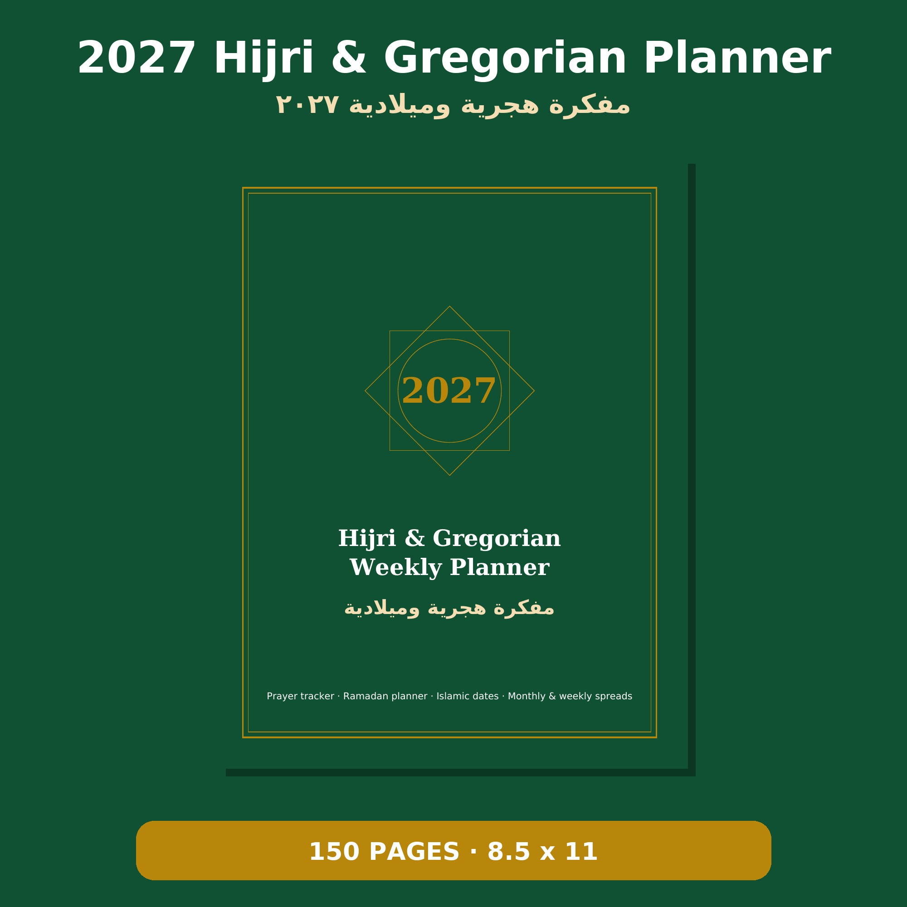
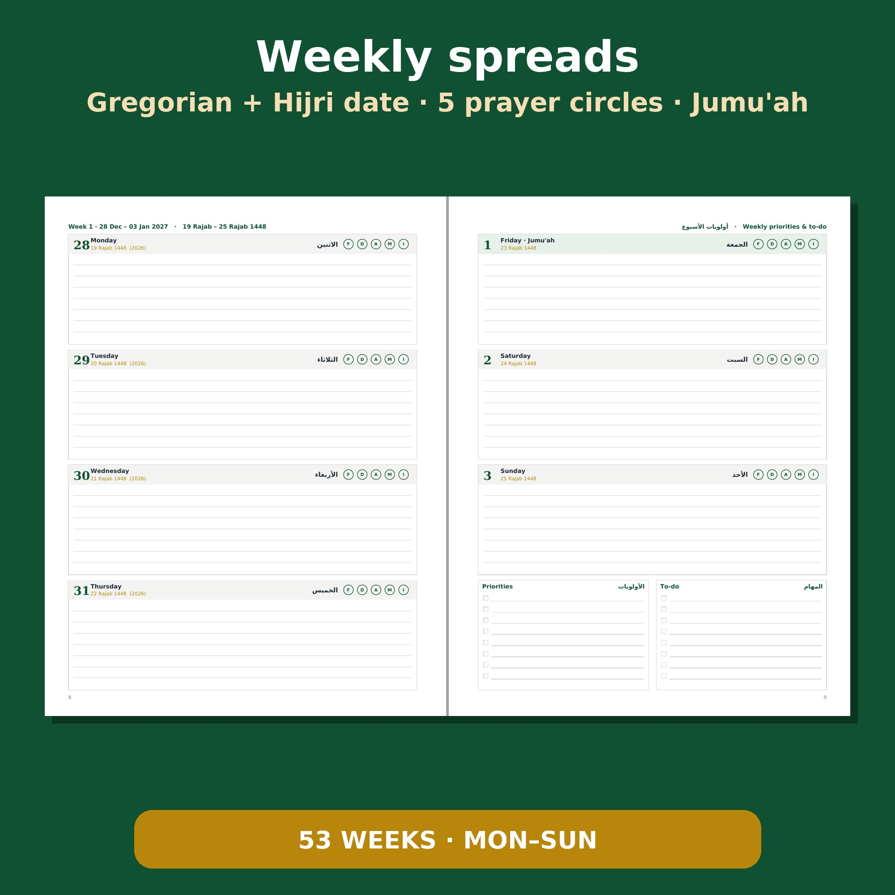

- 📅 Gregorian and Hijri (Umm al-Qura) dates on every day
- 🕌 Five daily prayer check-circles, with Jumu'ah highlighted
- 🌙 30-day Ramadan planner: fasting, prayers, Taraweeh, Quran
- 🗓️ 12 monthly calendars with Islamic dates, goals and habit trackers
- ✍️ 53 weekly spreads with priorities and to-do lists, 150 pages, 8.5 × 11 in